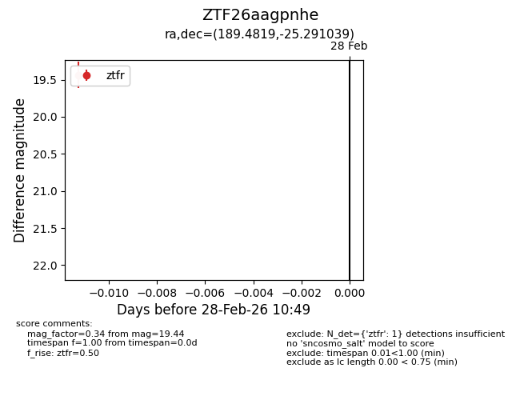
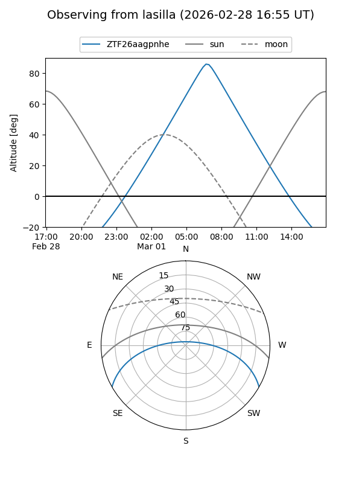
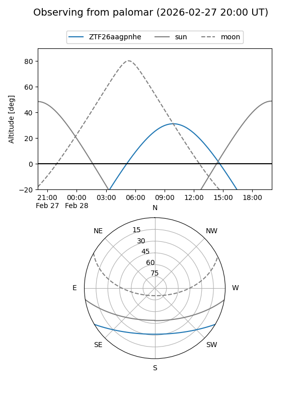

ZTF26aagpnhe
Target ZTF26aagpnhe at 2026-02-28 10:50
Aliases and brokers:
FINK: link
Lasair: link
ALeRCE: link
alt names
ZTF26aagpnhe (ztf,fink_ztf)
Coordinates:
equatorial (ra, dec) = 189.4819,-25.29104
equatorial (HMS+DMS) = 12:37:55.67,-25:17:27.74
galactic (l, b) = (299.0831,+37.47972)
Flags:
Photometry:
last ztfr=19.44
1 ztfr detections
Lightcurve

Visibility


Additional plots